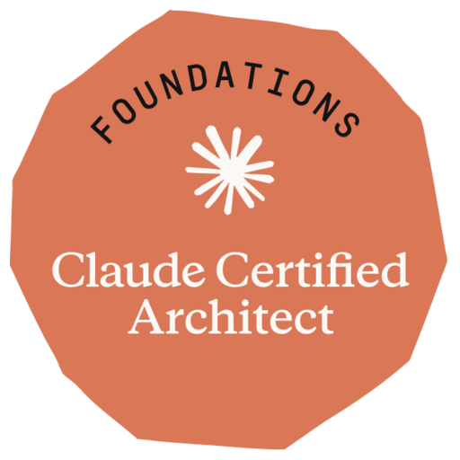

Product design leadHead of UI/UX, S-Quantum EngineTangerang, IndonesiaClaude Certified Architect
I’m Prima. For 15 years I’ve designed products for work with real stakes: mine operations, regulatory compliance, lending and insurance. I turn complex operations into clear next steps, for the supervisor on site and the auditor signing off. Today I lead UI/UX at S-Quantum Engine, taking enterprise platforms from discovery to production-ready code.
How I work
Built for the field
Basic phones, weak signal, busy people. I design for real conditions, so the product works everywhere, not only in the demo.
AI explains, people decide
AI recommends and shows its working. People approve, adjust or override, and the product keeps the record.
Proven at the edge
I pilot at the remote site first, where it is hardest. What works there scales to head office with confidence.
15+
years in product design
8
enterprise platforms shipped
5
industries: mining, fuel logistics, fleet, finance, insurance
Four films.Lights off.
Four products I led the design of, each told in under a minute. Under every film: the problem, my part, the decision that mattered, and how the result was measured.
Scroll · total runtime 03:05 · sound on
01 · AI products · Finance Copilot, Pit Forecast
Designed for answers people can act on.
- The problem
- AI can answer almost anything. Finance teams and mine planners still would not act on an answer they could not check.
- My part
- Led the design of both products, from discovery to production-ready code.
- The decision that mattered
- Every answer shows its working: the data behind it and how sure it is. Every rain forecast is scored against the rain that actually fell.
~252 hrs
of finance staff time saved a month
76–84%
rainfall accuracy in backtests
Backtested on 2024–25 site data
+26 pts
more accurate than the old forecast
Against the 2025 forecast in use
02 · Mining operations · OneMap, BeIKK, BeGIS, BeFMS
Designed for the people who run the pit.
- The problem
- Most of the mine ran on paper and spreadsheets. Permits waited for signatures, and hazards were spread across four tools.
- My part
- Set one design language for four apps, and kept it consistent as each team shipped.
- The decision that mattered
- One set of components and status colours across all four apps, so a supervisor who learns one can read them all.
77%
faster incident reporting, with live alerts
Days → hours
for road condition reports
Drone imagery replaced manual surveys
4 apps
on one design language
OneMap, BeIKK, BeGIS, BeFMS
03 · Mining compliance · Smart Shipping, BeRegulation
Designed for the people who sign off.
- The problem
- Every coal shipment needs a permit. Permits took about 10 days on paper across three teams, and the regulations sat on an outside platform.
- My part
- Designed the permit flow and the in-house compliance system that replaced the outside platform.
- The decision that mattered
- Each obligation is assigned once, claimed with evidence and approved by an auditor, so nothing is signed off without proof.
10 → 3 days
to process a shipping permit
Average cycle, before and after launch
350
monthly active users on BeReg
$62K
saved over 5 years by running compliance in house
04 · Auto financing · Garasi dealer app
Designed to close the deal.
- The problem
- Every extra step slows a car loan down, and a dealer can lose the sale while the customer waits.
- My part
- Designed the dealer journey end to end and ran three rounds of testing with dealers.
- The decision that mattered
- The loan was designed as one journey, not a stack of forms, and redesigned after every round of dealer testing.
< 5 min
to approve a loan
+25%
growth in disbursement
0%
non-performing loans
Two of these films are about coal.
I won’t hide that. Coal mining is where I learned to design when safety is on the line, for shift supervisors, haul truck drivers and permit officers. The work I’m proudest of there keeps hazards in view and makes every safety step easy to follow.
It also showed me what I want to work on next: products that help Indonesian communities stay safe and steady when the ground, the sea or the market moves. That is why I’m building Prime, an independent design system for products that work on a basic phone, a weak signal and a busy shift.
About
I started in print in Singapore, moved into product design in Jakarta, and spent the last decade on products where the stakes are operational: loans, permits, safety and money. At SQE I brought AI into the design team’s daily work and set up a handoff from Figma straight to production React. Outside work, I’m building Prime with Claude Code as my coding partner: a design system that coding agents read and build from.

Certified by Anthropic Claude Certified Architect, Foundations Verify on CredlyPetra Christian University, Surabaya
- 2022 – nowHead of UI/UX · S-Quantum Engine (SQE)Enterprise platforms for mining, finance and insurance. Discovery to production-ready code, and the design system they share.
- 2018 – 2022CX Specialist · Bank OCBC NISPLaunched the KTA unsecured lending platform end to end, inside banking regulation.
- 2017 – 2018UI/UX Department Head · PT Bank SinarmasLed the UX department and the Simobi+ mobile banking app.
- 2016 – 2017UI/UX Lead · Ralali.comPrototypes validated with usability tests and analytics.
- 2015 – 2016UI/UX Designer · QerjaVisual and interaction design across web and mobile.
- 2008 – 2012Designer · Isobar and Ngaiheng, SingaporePrint, digital and advertising design. Where I learned craft.